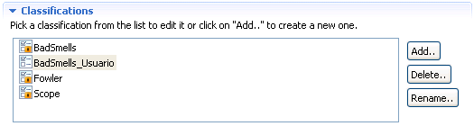

Editing classificationsEditing classifications
Editing classificationsEditing classificationsIf you wanna edit a classification it has to belong to you, it cannot belong to the plugin since plugin's classifications are not modifiable.
Once you have selected a user classification, editing it consist on modifying its attributes in the same way explained in the section for creating new classifications.
In the Selected Classification's section you can modify the classification's description and define if it's gonna be multicategory or not. The description is a purely descriptive attribute. The fact that the classification is multi or unicategory is more functional since multicategory classifications allow refactorings that belong to more than one of it's categories while unicategory refactorings only allow refactorings that belong to zero or one of it's categories.
In the Categories's section the user can add new categories, delete existing categories or rename them.
Deleting a category not only removes it from the catalog but it also makes that all the refactorings that belonged to the category change and no longer belong to it. If a new category with the same name were created the refactorings taht belonged to the category would have to be added to the category one by one to restore the previous state.
On top of thos changes in the Classifications's section the user can rename the selected classification by clicking on the rename button.
